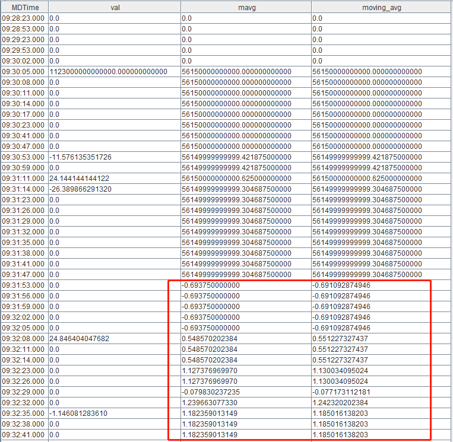
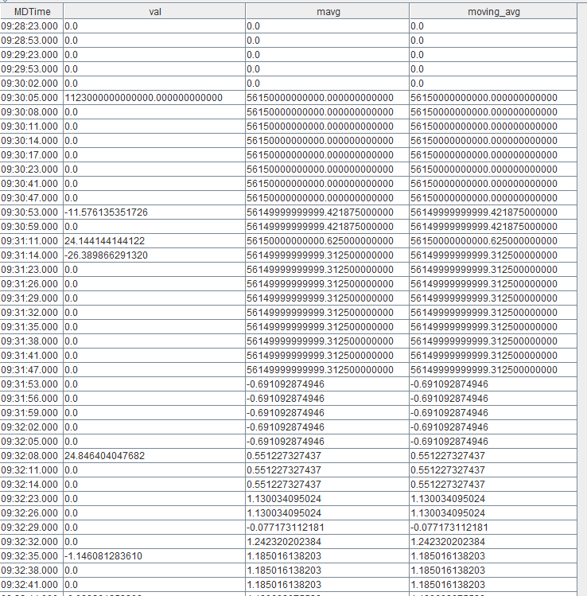

计算精度问题与 DECIMAL 类型
1. DECIMAL 的计算特性
1.1. DECIMAL 的计算方式
DECIMAL 的存储分为两部分，即存储整型数据的 raw data 和存储小数位数的 scale。例如，对于DECIMAL32(2) 类型的 1.23, 它存储了两个数据：(1) raw data：即整型 123，(2) scale：即 2。这样存储的好处是，在计算时可以直接使用整型的 raw data 进行计算，从而避免精度损失。
对于大多数计算函数，如果最后返回的结果是浮点数类型，DECIMAL 在进行计算时， 会使用 raw data 参与计算，尽量延迟转换成浮点数的时机，从而确保得到精确结果。比如计算 avg 时，假设数据为 DECIMAL32(2) 类型：[1.11, 2.22, 3.33]，其 raw data 为：[111, 222, 333]。在计算时，先算出 raw data 的 sum：111 + 222 + 333 = 666，然后转换成浮点数：double(666) / 102 / 3 = 2.22。
对于DECIMAL算术运算的规则，可参照：DECIMAL.md。
1.2. DECIMAL 的计算输出
本节主要讲述DECIMAL作为计算函数输入的输出结果。
在 DolphinDB 计算函数中，以 DECIMAL 类型作为输入，输出结果仍为 DECIMAL 类型的函数较少，仅有：sum、max、min、first、last、firstNot、lastNot 及其 cum、m、tm、TopN 系列函数，如 cummax、mmin、tmsum、msumTopN，cumsumTopN，tmsumTopN 等；以及 cumPositiveStreak。
a = decimal64(rand(10,100),4)
typestr(sum(a))
>> DECIMAL128
typestr(cummax(a))
>> FAST DECIMAL64 VECTOR
typestr(mmin(a,5))
>> FAST DECIMAL64 VECTOR
T = 2023.03.23..2023.06.30
typestr(tmsum(T, a, 3))
>> FAST DECIMAL128 VECTOR
typestr(cumPositiveStreak(a))
>> FAST DECIMAL128 VECTOR需要注意的是，在引入 DECIMAL128 类型后，自 2.00.10 版本起，sum 系列函数和 cumPositiveStreak 的输入输出类型对应规则如下：
| 计算函数 | 输入类型 | 输出类型 |
|---|---|---|
| sum/cumsum/msum/tmsum/msumTopN/cumsumTopN/tmsumTopN/cumPositiveStreak | DECIMAL32 | DECIMAL64 |
| DECIMAL64 | DECIMAL128 | |
| DECIMAL128 | DECIMAL128 |
除了上述函数外，cum、m、tm、TopN 系列的函数，包括它们对应的原始的函数，比如 avg、std、var、skew 等，以 DECIMAL 类型作为输入，都将返回 DOUBLE 类型的输出结果。
a = decimal64(rand(10,100),4)
typestr(avg(a))
>> DOUBLE
typestr(cumstd(a))
>> FAST DOUBLE VECTOR
typestr(mvar(a,5))
>> FAST DOUBLE VECTOR
T = 2023.03.23..2023.06.30
typestr(tmskew(T, a, 3))
>> FAST DOUBLE VECTOR下面将以 DECIMAL64 作为输入为例，列出常见计算函数的输出结果类型。
| 计算函数 | 输入类型 | 输出类型 |
|---|---|---|
| sum/cumsum/msum/tmsum | DECIMAL64 | DECIMAL128 |
| msumTopN/cumsumTopN/tmsumTopN | DECIMAL64 | DECIMAL128 |
| max/cummax/mmax/tmmax | DECIMAL64 | DECIMAL64 |
| min/cummin/mmin/tmmin | DECIMAL64 | DECIMAL64 |
| first/mfirst/tmfirst | DECIMAL64 | DECIMAL64 |
| last/mlast/tmlast | DECIMAL64 | DECIMAL64 |
| firstNot/cumfirstNot | DECIMAL64 | DECIMAL64 |
| lastNot/cumlastNot | DECIMAL64 | DECIMAL64 |
| cumPositiveStreak | DECIMAL64 | DECIMAL128 |
| avg/cumavg/mavg/tmavg/mavgTopN/cumavgTopN/tmavgTopN | DECIMAL64 | DOUBLE |
| sum2/cumsum2/msum2/tmsum2 | DECIMAL64 | DOUBLE |
| prod/cumprod/mprod/tmprod | DECIMAL64 | DOUBLE |
| med/cummed/mmed/tmmed | DECIMAL64 | DOUBLE |
| std/cumstd/mstd/tmstd/mstdTopN/cumstdTopN/tmstdTopN | DECIMAL64 | DOUBLE |
| skew/mskew/tmskew/mskewTopN/cumskewTopN/tmskewTopN | DECIMAL64 | DOUBLE |
| kurtosis/mkurtosis/tmkurtosis/mkurtosisTopN/cumkurtosisTopN/tmkurtosisTopN | DECIMAL64 | DOUBLE |
| corr/cumcorr/mcorr/tmcorr/mcorrTopN/cumcorrTopN/tmcorrTopN | DECIMAL64 | DOUBLE |
| covar/cumcovar/mcovar/tmcovar/mcovarTopN/cumcovarTopN/tmcovarTopN | DECIMAL64 | DOUBLE |
| beta/cumbeta/mbeta/tmbeta/mbetaTopN/cumbetaTopN/tmbetaTopN | DECIMAL64 | DOUBLE |
2. DECIMAL 的优缺点
2.1. DECIMAL 的优点
实数在计算机内部无法被精确地表示为浮点数的原因主要有两个：第一个原因是类似于 0.1 这样的数字，具有有限的十进制表示，但是在二进制中能表示为无穷重复的数据，等于 0.1 的近似值，无法被精确表示；第二个原因是数值超出了数据类型能表示的数值范围，系统将对数据做一定处理。与浮点数相比，DECIMAL 类型最大的优点，就在于它能够精确地表示和计算数据。
例如，在表示123.0001时：
a =123.0001
print(a)
>> 123.000100000000003
b = decimal64(`123.0001,15)
print(b)
>> 123.000100000000000可见，浮点数无法精确表示123.0001，而 DECIMAL 可以。
在计算 avg 时：
a = array(DOUBLE,0)
for (i in 1..100){
a.append!(123.0000+0.0003*i)
}
avg(a)
>> 123.015149999999
avg(a) == 123.01515
>> false
eqFloat(avg(a),123.01515)
>> true
b= array(DECIMAL64(4),0)
for (i in 1..100){
b.append!(123.0000+0.0003*i)
}
avg(b)
>> 123.015150000000
typestr(avg(b))
>> DOUBLE
avg(b) == 123.01515
>> true可见，在进行 avg 计算时，浮点数没有返回精确结果，而 DECIMAL 虽然返回结果也是 DOUBLE 类型，但返回了精确结果。
2.2. DECIMAL 的缺点
2.2.1. 容易溢出
DECIMAL32/DECIMAL64/DECIMAL128 类型的数值范围如下表所示，其中，DECIMAL32(S)、DECIMAL64(S) 和 DECIMAL128(S) 中的 S 表示保留的小数位数。
| 底层存储数据类型 | 字节占用 | Scale有效范围 | 有效数值范围 | 最大表示位数 | |
|---|---|---|---|---|---|
| DECIMAL32 | int32_t | 占用4个字节 | [0,9] | (-1 * 10(9 - S), 1 * 10(9 - S))) | 9位 |
| DECIMAL64 | int64_t | 占用8个字节 | [0,18] | (-1 * 10 (18 - S), 1 * 10 (18 - S)) | 18位 |
| DECIMAL128 | int128_t | 占用16个字节 | [0,38] | (-1 * 10 (38 - S), 1 * 10 (38 - S)) | 38位 |
在有效数值范围和最大表示位数的限制下，DECIMAL 类型很容易溢出。自 2.00.10 版本起，我们支持算术运算溢出后，若存在更高精度的类型，则将自动拓展结果的数据类型，从而降低溢出风险：
version 2.00.9.6：
a = decimal32(4.0000,4)
b = decimal32(8.0000,4)
c = a*b
>> Server response: 'c = a * b => Decimal math overflow'
version 2.00.10：
a = decimal32(4.0000,4)
b = decimal32(8.0000,4)
c = a*b
print(c)
>> 32.00000000
typestr(c)
>> DECIMAL64但即使如此，DECIMAL128 仍存在溢出风险：
a = decimal128(36.00000000,8)
b = a*a*a*a
>> Server response: 'b = a * a * a * a => Decimal math overflow'如上所示，由于 DolphinDB 中 DECIMAL 类型的数据乘法运算结果的 scale 是逐个累加的，b 的预期结果将会是 1679616.00000000000000000000000000000000，将会有39位数字，超出了 DECIMAL128 的最大表示位数38位，导致了溢出。
2.00.10版本新增支持了 DECIMAL 类型的乘法函数 decimalMultiply，与 multiply 函数 (* 运算符) 相比，该函数可以指定计算结果的精度。当 DEICMAL 类型的乘法运算导致 scale 累加存在溢出风险时，可以按需使用 decimalMultiply 函数，指定计算结果精度。
a = decimal64(36.00000000,8)
decimalMultiply(a, a, 8)
>> 1296.000000002.2.2. 转换误差
当我们直接使用常量生成 DECIMAL 类型时，可能会因为浮点数的转换产生误差：
a = 0.5599
decimal64(a,4)
>> 0.5598为了避免这种误差，可以使用字符串来生成 DECIMAL：
a = "0.5599"
decimal64(a,4)
>> 0.55992.2.3. 内存占用
DECIMAL32、DECIMAL64 和 DECIMAL128 类型在内存中分别占用4个字节、8个字节和16个字节，而 FLOAT 和 DOUBLE 类型在内存中占用4个字节和8个字节。因此，在数据量相同的情况下，DECIMAL128 占用的内存是 DOUBLE 的两倍。
且由于算术运算溢出后，将自动拓展结果的数据类型，每次拓展后等量数据占用的内存将翻倍，存在一定的内存风险。
2.2.4. 性能差异
与 FLOAT 和 DOUBLE 类型相比，DECIMAL 类型的计算速度更慢，我们将在第三节中进行详细比较。
2.2.5. 局限性
在 DolphinDB 中，DECIMAL 类型与 FLOAT/DOUBLE 类型相比，目前所支持的功能和结构较少。
- 在函数支持方面，尚有少部分计算函数不支持 DECIMAL 类型。
- 计算结果方面，cum, tm, m, TopN 系列的函数，包括它们对应的原始的函数（
sum、max、min、firstNot、lastNot、cumPositiveStreak除外），即使原始数据是 DECIMAL 类型，返回结果还是浮点数类型。 - 数据结构方面，DolphinDB 系统目前暂未支持 DECIMAL 类型在 matrix 和 set 中使用。
- 数据类型转换方面，DolphinDB 系统暂不支持 BOOL/CHAR/SYMBOL/UUID/IPADDR/INT128 等类型和 temporal 集合下的时间相关类型与 DECIMAL 类型相互转换，其中 STRING/BLOB 类型的数据如需转换成 DECIMAL 类型，必须满足 STRING/BLOB 类型的数据可以转换成数值类型的前提。
3. 浮点数与 DECIMAL 计算性能差异比较
为了比较浮点数类型与 DECIMAL 类型的计算性能差异，我们选取了一些常用的计算函数，比较相同数据情况下，各个数据类型的计算耗时。
首先，模拟数据脚本如下：
n = 1000000
data1 = rand(float(100.0),n)
data2 = double(data1)
data3 = decimal32(data1,4)
data4 = decimal64(data1,4)
data5 = decimal128(data1,4)随后，使用 timer 语句统计常用计算函数对于各个类型数据的计算耗时：
timer(100){sum(data1)} //执行100次，避免单次计算误差，并放大不同类型间的耗时差异
timer(100){sum(data2)}
timer(100){sum(data3)}
timer(100){sum(data4)}
timer(100){sum(data5)}
... ...得到的计算耗时统计结果如下（单位：ms）：
| FLOAT | DOUBLE | DECIMAL32 | DECIMAL64 | DECIMAL128 | |
|---|---|---|---|---|---|
| sum | 52.985 | 64.331 | 28.721 | 57.234 | 107.126 |
| sum2 | 173.278 | 211.772 | 176.261 | 180.051 | 603.422 |
| prod | 63.650 | 55.641 | 171.718 | 174.389 | 18850.009 |
| avg | 178.086 | 210.495 | 26.094 | 106.869 | 258.508 |
| std | 362.388 | 345.758 | 278.933 | 319.177 | 968.276 |
| kurtosis | 547.751 | 407.561 | 585.859 | 769.879 | 1013.591 |
| skew | 546.705 | 439.348 | 622.758 | 842.994 | 1074.128 |
根据上述统计结果，可以得知：
（1）对于大部分计算函数，DECIMAL 的性能都比 FLOAT/DOUBLE 差；
（2）DECIMAL128 在计算时，会转换成 LONG DOUBLE（DECIMAL32/DECIMAL64 会转换成 DOUBLE），而 LONG DOUBLE 的实现取决于编译器和 CPU，可能是 12 字节或者 16 字节，LONG DOUBLE 的乘法在数据很大时非常耗时。在本节的测试样例中，vector 里的元素的取值范围较大，所以其乘积非常大，计算非常耗时。而如果把取值范围取小一些，比如 [0.5, 1.0]，则 DECIMAL128 的计算和 DECIMAL32/DECIMAL64 相差不大；
（3）对于 sum、avg、std 这样的函数，DECIMAL 类型在计算时都没有做循环展开，而浮点数类型对 sum 做了循环展开，avg 则没有。此外，由于 DECIMAL 计算时会使用 raw data 先参与计算，再直接返回 DECIMAL 类型或转化为浮点数，本质是整型计算，实际过程比浮点数运算更高效。因此，它们的性能相差不大，甚至 DECIMAL32/DECIMAL64 的性能比 FLOAT/DOUBLE 更好。
4. DECIMAL 最佳实践：避免 mavg 计算精度损失
本节将以具体场景，比较 DECIMAL 类型和浮点数类型在实际计算中的精度差异。
mavg 和 moving(avg,…) 虽然在含义上完全相同，但两者的实现方式并不一致。mavg 的算法是：随着窗口的移动，总和加上进入窗口的数，减去离开窗口的数，再计算 avg，所以在这个加减的过程中，会产生浮点数精度问题。
首先，我们导入样例数据 tick.csv，原始数据类型均为 DOUBLE 类型，并计算 mavg、moving(avg,…)：
data = loadText("<yourDirectory>/tick.csv")
t = select
MDTime,
((LastPx - prev(LastPx)) / (prev(LastPx) + 1E-10) * 1000) as val,
mavg(((LastPx - prev(LastPx)) / (prev(LastPx) + 1E-10) * 1000), 20, 1),
moving(avg, ((LastPx - prev(LastPx)) / (prev(LastPx) + 1E-10) * 1000), 20, 1)
from data得到的结果如下图所示：
可以看到，计算结果从09:31:53.000开始产生误差。
为了避免这种计算误差，我们先将中间计算结果转换为 DECIMAL128 类型，再计算 mavg 和 moving(avg,…)：
t = select
MDTime,
((LastPx - prev(LastPx)) / (prev(LastPx) + 1E-10) * 1000) as val,
mavg(decimal128(((LastPx - prev(LastPx)) / (prev(LastPx) + 1E-10) * 1000),12), 20, 1),
moving(avg, decimal128(((LastPx - prev(LastPx)) / (prev(LastPx) + 1E-10) * 1000),12), 20, 1)
from data得到的结果如下图所示：
可以看到，mavg 和 moving(avg,…) 的计算结果完全一致。
由于浮点数的精度问题，cum, tm, m, TopN 系列的函数，包括它们对应的原始的函数，比如 avg、std 等，都有可能导致计算的精度误差。在对精度极为关注的场景下，我们推荐使用 DECIMAL 进行计算。需要注意的是，除了 sum、max、min、firstNot、lastNot、cumPositiveStreak 及其对应的系列函数，在入参是 DECIMAL 类型时能够返回 DECIMAL 类型的计算结果，其他函数都将返回浮点数类型。虽然存在一定的 DECIMAL 类型转换为浮点数类型的精度误差风险，但避免了计算过程中的精度损失，也可以对计算结果使用 round 函数或再次转换为 DECIMAL 类型，得到相对精确的结果。
5. 总结
浮点数由于其实现方式，在计算机内部无法精确地表示某些数值，因而容易出现精度误差，导致存储或计算结果与预期不符。DECIMAL 可以精确表示数值，但存在容易溢出、内存占用大、性能较劣、有一定局限性等缺点。尽管如此，在某些场景中，选用 DECIMAL 类型依旧能够很好地避免存储或计算结果与预期不符的情况出现。
综上所述，在实际应用时，需要考虑具体需要，选用合适的数据类型，对数据进行相应的精度管理。